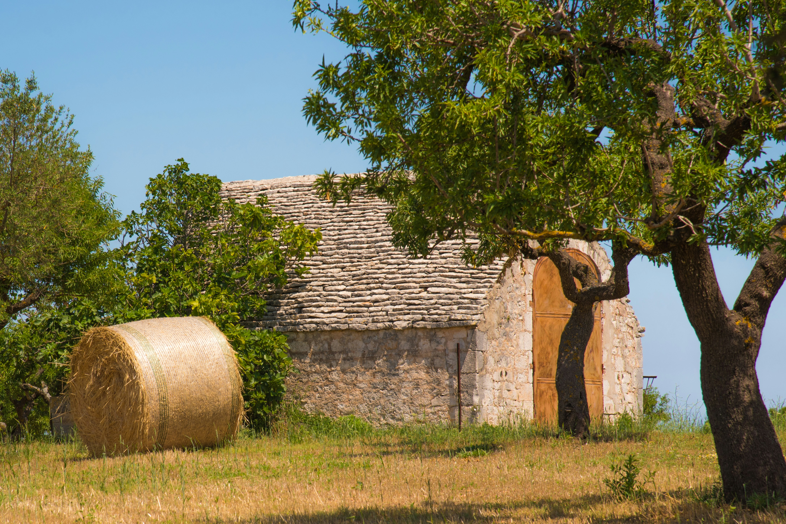

Gargano e Foggia
Lo sperone d'Italia tra scogliere bianche, Foresta Umbra e le mistiche Isole Tremiti.
Esplora →
Scopri il mare, i borghi, la gastronomia e la storia della regione più autentica del Mediterraneo.
Sei province, infinite sorprese.
Lo sperone d'Italia tra scogliere bianche, Foresta Umbra e le mistiche Isole Tremiti.
Esplora →
Il cuore pulsante della Puglia: trulli, grotte di Castellana, Polignano a Mare e la focaccia barese.
Esplora →
Castel del Monte, la Burrata di Andria e la Cattedrale di Trani sul mare.
Esplora →
La città dei due mari: Magna Grecia, gravine, ceramica di Grottaglie e le cozze del Mar Piccolo.
Esplora →
Ostuni la Città Bianca, la Riserva di Torre Guaceto, masserie e la Via Appia che finisce sul mare.
Esplora →
Il barocco leccese, le Maldive del Salento, la Notte della Taranta e due mari da vivere.
Esplora →La Puglia ha un'esperienza per ogni desiderio.
Periodo ideale per il mare senza folla. Temperature miti (25–28°), prezzi ancora bassi. Fioritura dei campi.
Alta stagione balneare. Mare splendido, spiagge vivaci. Ricca programmazione eventi: Notte della Taranta, Disfida di Barletta, Festival della Valle d'Itria.
Il mese d'oro. Mare ancora caldo (24–26°), spiagge quasi libere, prezzi ragionevoli. Raccolta uva e inizio olive.
Turismo culturale e gastronomico. Siti UNESCO senza folla. Luminarie di Lecce a Natale. Frangitura dell'olio.